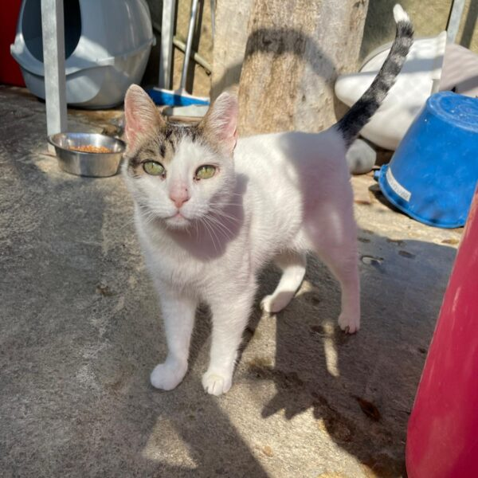

Ells també esperen



Llegó al refugio en julio de 2016 junto a su hermana, quien fue adoptada poco después. Mandy, sin embargo, lo pasó muy mal rodeada de tantos gatos; se agobió y terminó escapándose. Desde entonces ha vivido en los alrededores de la protectora, siempre cerca, pero sin querer volver a entrar.
Hace poco comenzó a presentar heridas en la cara que resultaron ser consecuencia de una alergia, por lo que necesita medicación crónica. Esto nos obligó a ingresarla nuevamente en el refugio, en una zona segura de la que no pueda escaparse. Aunque está atendida y cuidada, sabemos que este no es el lugar ideal para ella, especialmente ahora que es una gata senior.
Mandy puede mostrarse tímida al principio, pero cuando supera esa barrera se convierte en una gata muy cariñosa, que disfruta enormemente de la compañía humana y también de otros gatos tranquilos. Al haber pasado tantos años viviendo al aire libre, para ser plenamente feliz necesitaría un hogar con acceso a una zona exterior protegida, donde pueda salir sin riesgo de perderse.
Mandy es ya una gata mayor que merece pasar sus últimos años en la tranquilidad y el calor de un verdadero hogar, rodeada de amor y cuidados. Ojalá pronto aparezca esa familia dispuesta a darle la gran oportunidad que tanto merece y que le permita vivir el resto de su vida querida y protegida